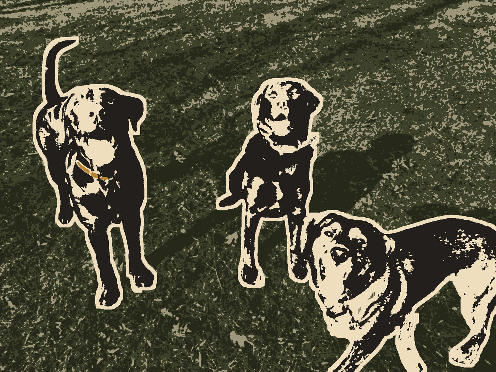

Thursday's ChoiceFor the weekend of Sat 3 – Sun 4 October
Company Mill and the Old Dam on Crabtree Creek
A longer, steadier morning: a 5.8-mile loop through Umstead's oaks to the stone remains of a mill dam built in 1810.
· Weekend choice 2 of 2

Why This Week
This is the choice for a slower day with more miles. The creek is crossed on a bridge, not a ford, so a wet Sunday doesn't close the route, and the canopy takes the edge off light rain.
Conditions
Saturday partly sunny, high near 78, 30% chance of showers. Sunday mostly cloudy, high near 75, 40%.
If it turns
Thunder in the forecast, not just showers: Stay close: Korstian's fire roads are an easy hour, and you can leave quickly. Go to: Duke Forest, Korstian Division
Forecast snapshot · issued Mon 28 Sep, 06:49 ET · NWS Raleigh forecast, issued 6:49 a.m. 28 Sep
For Rupert
Shade: Wooded throughout.
Keep in Mind
Bikes near the Reedy Creek lot; Roots on the descents
If Plans Change
- CloserDuke Forest, Korstian Division10–15 min drive
- Bigger dayRaven Rock Loop, above the Cape Fear2.6 mi · 1 h 10 – 1 h 20 drive · half day
- AlternativeBrumley Forest, before eight10–15 min drive
Memory Prompt
The largest acceptable stick, with Rupert for scale.
Sources
- This Is Raleigh — Company Mill Trail retrieved 2026-09-29
- NWS Raleigh forecast, issued 6:49 a.m. 28 Sep retrieved 2026-09-29
Place details as recorded Mon 28 Sep. They stay as published even if the place's record is corrected later.